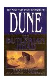
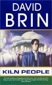
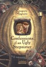
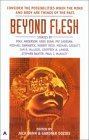

|
Previous Reads |

|
The Butlerian Jihad
 As I've
said before
,
my experience has been that a book of 500 pages is a
sure sign that there was not a strong editor to trim the bloat.
This book is another example of that.
The pacing is poor, the style is a Grisham-esque three page
chapter construction and the insights into human/robot
interactions and relations are sophmoric.
Stanislaw Lem did a better job 40 years.
All in all, a long read and a work that would have
been handled better with better writing, a more thoughtful
insight into the complexities of the world and
a deep creation of that world.
As I've
said before
,
my experience has been that a book of 500 pages is a
sure sign that there was not a strong editor to trim the bloat.
This book is another example of that.
The pacing is poor, the style is a Grisham-esque three page
chapter construction and the insights into human/robot
interactions and relations are sophmoric.
Stanislaw Lem did a better job 40 years.
All in all, a long read and a work that would have
been handled better with better writing, a more thoughtful
insight into the complexities of the world and
a deep creation of that world.
(October 2003)
|
|

|
The Kiln People
My past experience has been that a book of 500 pages is a
sign that there was not a strong editor to trim the bloat.
This book is an example of that.
The first half of this book is fantastic -- the inventiveness
and detail is unbelievable. David Brin created a deeply
detailed and believable world for this story and he
pulls it off every well. The ending peters out, though, and
the 500 page problem leads to 100+ pages of petering.
Oh, and the basic plot is a detective story but the
ending is a "pull a rabbit out of the hat" type solution
rather than any real mystery. Sigh, a sad thing all
around.
(May 2003)
|
|

|
Confessions of an Ugly Stepsister
 This is a fun read with good characters and the ending
is much better than
Wicked: The Life and Times of the Wicked Witch of the West
.
This is the Cinderalla story told by one of the ugly
stepsisters. Maguire builds a believable story around the
fairy tail explaining how the father of the beautiful girl
looses a wife, marries an "evil stepmother" and then disappears
from the scene letting the story of the ball play out.
And what is "happily ever after".
A good book.
This is a fun read with good characters and the ending
is much better than
Wicked: The Life and Times of the Wicked Witch of the West
.
This is the Cinderalla story told by one of the ugly
stepsisters. Maguire builds a believable story around the
fairy tail explaining how the father of the beautiful girl
looses a wife, marries an "evil stepmother" and then disappears
from the scene letting the story of the ball play out.
And what is "happily ever after".
A good book.
(May 2003)
|
|

|
Beyond Flesh
by
Jack Dann
(editor)
Gardner Dozois
(editor)
Normally I'd give a science fiction collection of short stories
a 3-head rating because I really like that sort of thing. But
this was very disappointing.
These editors seem to but together books on different themes
by picking short stories from the many science fiction publications
that specialize in that (Analog, ...).
This collection contained stories that speculated about a world
after people moved beyond our current fleshy container.
The 2-head rating is not for the stories some of which are
very creating, entertaining and well written. This collection,
though, is very weak with some stories only partually connected
to the theme of the book. While some of the individual
short stories are great, this collection is a hack job.
(January 2003)
|